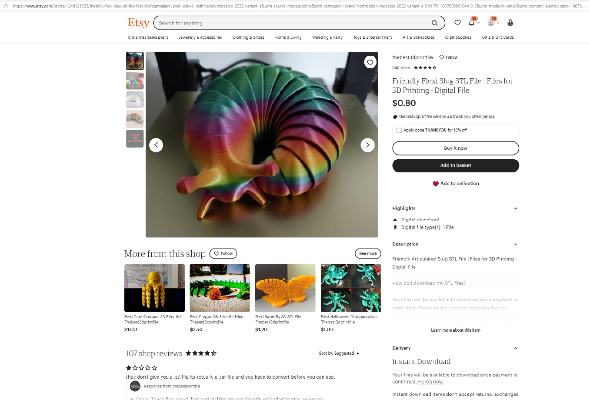

Assignment 5: Meshing Around (And How to Become an Extruder Repairperson)

Here is all the documentation for assignment 5. Note that this assignment ran long due to the fact that my nozzle and extruder broke. This was a bit dramatic, in that I could not find very good help online, and I knew nobody who could help. So I took my fix-it knowledge (which is kind of good, actually), and figured things out.
First, I discovered that the new printer I ordered had come with the wrong nozzle installed. Luckily, the 5 extra nozzle included were the correct types. I realized something was wrong in Assignment 4, when the nozzle was scratching the print jobs even though I had leveled the printer. By the time I fixed it, that nozzle was bent and broken.
I printed a test cube with the new nozzle, and that went fine. Then I decided to switch to HTPLA, and followed Protopasta's online instructions for printer configuration (Cura will not show imports of Protopasta settings). Something went very wrong, and damaged the extruder and the new nozzle.
I got out ALL the tools.

This took a lot of time and shaky hands, but by the time I had done it twice, I felt pretty comfortable knowing my way around an extruder. Now I can add that to my peer assistance offerings - if you need help replacing a nozzle or fixing another extruder problem, I can help!
I did a little "shopping" online for downloads:

Initial Mesh Downloads Explored and Manipulated:
A jointed slug:
A mask to which I was going to attach horns (the mask was simply too difficult to print neatly with Cura):
An anime style Baby Yoda (Grogu), which was 3 files - head, body, and base. I only downloaded and played with the head, but decided not to make Grogu because I figured many others in the class might choose him.
Finally, I found this jointed crocodile:
The size of the crocodile was huge, 21cm, so I had to shrink it to 8cm due to the size of my printer bed, and the fact that I was playing with it and saw that the croc looked very cool when a copy of it was attached at the tail.
I experimented with two types of mesh - closed polysurfaces and quad mesh. Cura worked best with the closed polysurfaces (on the left, above).


The crocs worked in Cura, but Cura recommended extra brim and supports. This was because the design is for a jointed toy, and with the excessive shrinking of the design, the parts are very small. I was worried the joints might not hold up, so I kept the settings.
Finally it was time for the 9.5-hour print job (I had switched back to regular PLA out of caution):
The print finished! It wasn't too pretty at first:
I did it!
Source files can be found here:
MeshCroc.3dm
MeshCroc.3dmbak
MeshMask.3dm
GroguHead.3dm